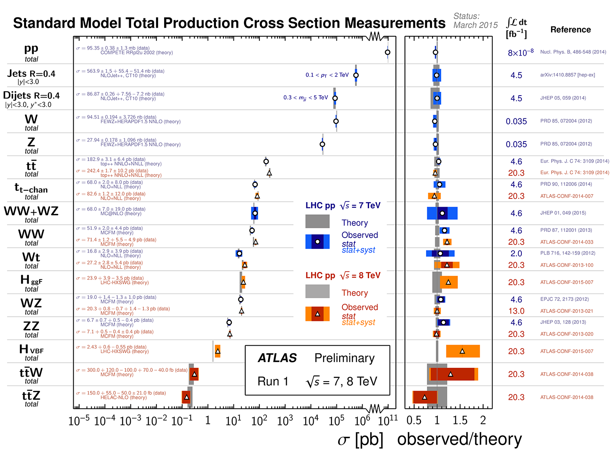
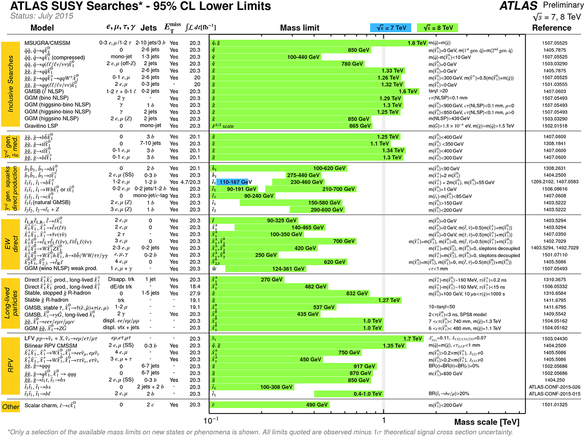
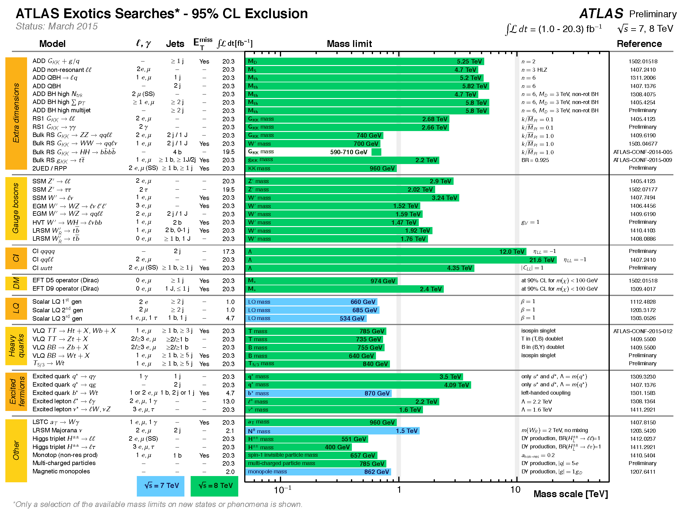

LHC Watching
Contents
As I’ve discussed on my blog, we’ve entered an exciting era of progress in fundamental physics, due to the LHC operating at the record energy of 13 TeV. Here’s a small collection of live images where you can see the status of the machine and particle collisions from the CMS experiment in real time.
- More live panels at Meltronx.com.
- Current total integrated luminosity here.
LHC Status via LHC Page one

Event displays from CMS


Physics analysis summaries from ATLAS
While all the LHC experiments publish their results, I’m highlighting some of the ATLAS summaries here because they are especially well organized and easy to access.
The Standard Model – Theory vs. Experiment
The SM works really well at describing particle physics data up to 8 TeV:

More at Summary plots from the ATLAS Standard Model physics group.
Summary of exclusion limits on new physics
95% confidence-level limits on various models of new physics. Specifically supersymmetry, and various other models (exotics).

